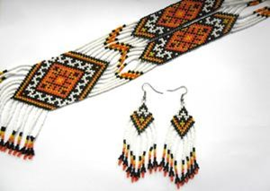
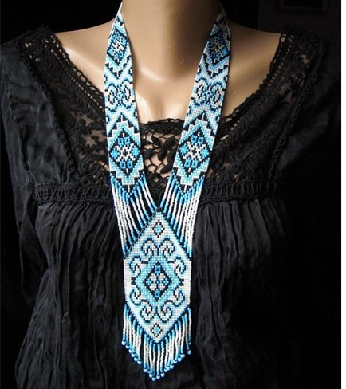

Етнічні віяння дали рукодільницям можливість зануритися в бісероплетіння. Ґердан - це особливі прикраси в етнічному стилі, виготовлені з бісеру. Це дивовижне явище поєднує в собі не лише творення прикраси, а й сакральне дійство. Смужки з бісеру з орнаментом із ромбів, квітів і слов'янських символів набули популярності в сучасному світі.
Факти та символіка
Силянка, або Ґердан - це довга стрічка з бісеру, на яку прикріплюють кулон або медальйон. Як правило, медальйон являє собою особливий оберіг або талісман. Наші предки використовували прикраси переважно як захист. Знак оберега давав захист від зла і хвороб, злиднів і зурочення.
Не дарма й сам медальйон на товстій стрічці розташовувався в ділянці сонячного сплетіння. Саме ця зона вважалася обителлю душі. Ґердани виготовляли як для чоловіків, так і для жінок. Пізніше стали плести браслети в цій техніці.
Візерунок на стрічці теж має особливе значення, тому до вибору орнаменту варто поставитися серйозно. Тісно пов'язані спеціальні символи на ґерданах із бісеру зі схемами вишиванок. До речі, ідеї для орнаментів можна черпати саме з прикладів вишивки хрестиком.
Техніки та схеми
Процес плетіння ґерданів з бісеру майстер-класи показують детально, він досить трудомісткий. Зазвичай використовують дві техніки бісероплетіння для створення оберегів:
- Ажурне плетіння використовується для створення рельєфних виробів. Цей вид максимально близький до звичного поняття бісероплетіння. Цей спосіб застосовувався ще нашими предками. Вибір малюнка в цьому випадку обмежений: можливе плетіння тільки чітких геометричних фігур.
- Бісерне ткацтво. Такий спосіб дає змогу отримати суцільну стрічку без отворів. Вибираються бісеринки одного розміру, тому полотно виходить цілісним. У цьому випадку візерунки для виробу повторюють схеми вишивки хрестиком. Ґердан ткати можна вручну або за допомогою станку.
Робота над прикрасою
Щоб почати плетіння ґердана, майстер-клас просто необхідний, особливо для рукодільниць-початківців. Процес має свої тонкощі, які необхідно враховувати.
Інструментарій:
- Верстат для плетіння
- Нитки або волосінь
- Голки для бісеру
- Схема орнаменту
Ткацький верстат можна придбати в магазині товарів для хендмейду, а також виготовити самостійно. Саморобний верстат являє собою прямокутну конструкцію з прорізами для ниток. В якості основи можна використовувати картонний короб невеликого розміру.
Майстер-клас із плетіння ґердана
Найпростішим методом виготовлення бісерної стрічки вважається плетіння на верстаті. Цей спосіб підійде для початківців. Отже, основні етапи роботи:
-
Підготовка
- Схеми для плетіння можна знайти в інтернеті або використовувати візерунки для вишивки хрестом. Бісер підбирають однакового розміру, щоб полотно не перекосилося. Нитку для плетіння вибирають такої товщини, яка відповідатиме отвору в бісеринці.
-
Налаштування верстата
- Натягують нитки основи досить міцно, щоб вони не провисали. Кількість ниток завжди дорівнює числу бісерін в орнаменті плюс одна.
-
Плетіння
- Кінець робочої нитки кріпиться на верстаті, інший же втягується в голку. На волосінь набирають перший ряд бісеру згідно зі схемою орнаменту. Ряд бісеру пропускають під плетінням, акуратно пальцями елементи розподіляються між нитками на верстаті. Потім робочу нитку з голкою пропускають крізь отвори намистин у ряді і закріплюють на протилежному кінці полотна. Таким чином плетуть кожен ряд.
-
Закінчення роботи
- Коли робота закінчена, нитки зрізають. Робоча нитка пропускається через бісер останнього ряду. На нитки, що залишилися, нанизують бахрому у вигляді бісерних ниток.
-
Плетіння медальйона
- Він являє собою продовження полотна ґердана. Візерунок стрічки продовжується в медальйоні. Посередині додають кілька рядів бісеру згідно з малюнком. Деякі вироби потребують розширення або звуження рядів. У цьому випадку під час роботи додають додаткові нитки або ж скорочують їхню кількість. Для цього останній ряд перед зміною кількості рядів полотна закріплюють робочою ниткою.
Поєднання кольорів і орнамент
Спочатку ґердани були оберегами, на які наносили сакральні символи. Сучасні ж прикраси можуть носити і
декоративну функцію. Схеми ґердана з бісеру на верстаті для початківців можна пошукати в різних джерелах або
скласти малюнок самостійно, якщо є необхідні навички.
Ефектний вигляд мають прикраси в класичній чорно-біло-червоній гамі. Наприклад, це можуть бути гуцульські
візерунки або слов'янські троянди, що зійшли з рушників і скатертин. Можливі сучасні варіації: хаотичні
лінії та геометричні фігури.
Ґердан - це не тільки елемент фольклору, а й унікальна прикраса.